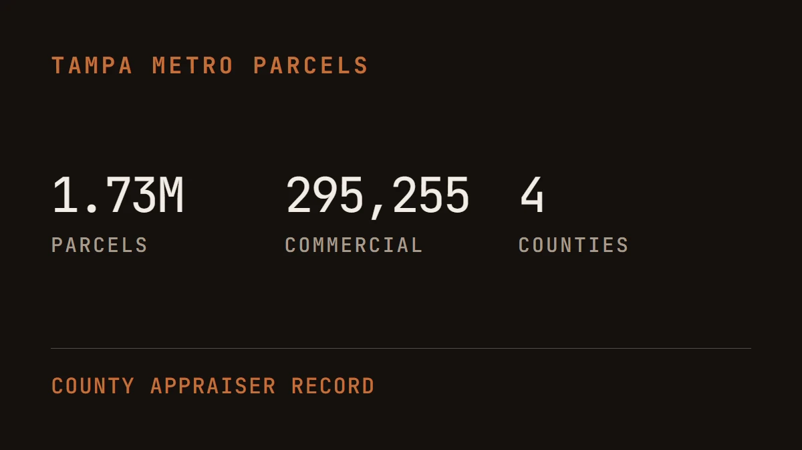

Four counties of property records, inside the chat window.

We built this for commercial real estate brokers working the Tampa Bay market. A broker used to answer one question (who owns this building, what did it last sell for, what is it worth) by opening the county appraiser website, searching a parcel, copying figures into a spreadsheet, then doing it again for every comparable. We connected those records to Claude, the assistant the broker already uses. Now they ask, and the answer comes back with the parcel, the owner, the sale history and the comparables already assembled.
The connector is a remote MCP server: the piece that lets an assistant read one specific set of records instead of guessing. Claude knows nothing about your county property roll on its own. Through the connector, every figure comes from the county file and names that file and its date. It covers Hillsborough, Pinellas, Pasco and Polk: 1,730,745 parcels, 295,255 of them commercial, as measured in September 2026. It is part of CRE Harness, the property research and BOV system we build for brokerage teams.
There is no API key to paste. The broker adds the connector in Claude and signs in through a browser. Because the connection knows who is asking, it can save a contact, a deal or a finished document as that person, not only read records.